반도체설계산업기사 (2008-09-07 기출문제)
1과목: 반도체공학
1. 다음 중 4가 원소가 아닌 것은?
- 탄소(C)
- 게르마늄(Ge)
- 인듐(In)
- 실리콘(Si)
(정답률: 83%)

2. JFET에서 게이트에 인가하는 역방향 바이어스의 크기를 크게 하여, 공핍층의 폭이 늘어나 채널이끊기게 되는 현상을 일컫는 용어는?
- 핀치오프(Pinch-off)
- 터널효과(Tunnel effect)
- 제너항복(Zener breakdown)
- 쇼트키장벽(Schottky barrier)
(정답률: 94%)
3. 다음 중 FET에 있는 3 단자의 명칭이 아닌 것은?
- 소스(source)
- 채널(channel)
- 드레인(drain)
- 게이트(gate)
(정답률: 93%)
4. PN 접합다이오드의 전기적특성인 정류특성(rectification)이란?
- 전류를 일정 크기 이상으로는 흐르지 못하게 하는 것이다.
- 전압의 크기에 관계없이 일정한 크기의 전류를 흐르게 하는 것이다.
- 한 방향으로 전류가 잘 흐르나, 반대 방향으로는 흐르지 못하게 하는 것이다.
- 시간이 흐름에 따라, 전류의 크기가 비례적으로 감소하면서 흐르게 하는 것이다.
(정답률: 95%)
5. 원자번호 14인 Si 원자의 최외각(M각) 전자는 몇 개인가?
- 1
- 4
- 8
- 10
(정답률: 89%)
6. 실리콘(Si) NPN 바이폴라 트랜지스터의 순방향 바이어스된 베이스와 이미터 사이의 전압은 어느 정도인가?
- 0[V]
- 0.3[V]
- 0.7[V]
- 1[V]
(정답률: 92%)
7. 열평형 상태의 PN 접합에서 캐리어 확산에 의해 전계가 생긴 영역을 일컫는 용어가 아닌 것은?
- 공핍영역(depletion region)
- 포화영역(saturation region)
- 천이영역(transition region)
- 공간전하영역(space charge region)
(정답률: 54%)
8. 다음 다이오드 중 역방향 바이어스 항복 전압에 상관없이 정상적으로 동작하는 것은?
- 정류기(Rectifier)
- 제너 다이오드(Zener diode)
- 바랙터 다이오드(Varactor diode)
- 스위칭 다이오드(Switching diode)
(정답률: 88%)
9. PN 접합의 전압-전류 특성에 대한 설명으로 옳은 것은?
- 금지대 폭이 큰 반도체일수록 항복 전압이 낮다
- 포화전류가 흐르도록 하는 바이어스 방향은 순방향 바이어스이다.
- N 영역이 음(-)이 되도록 외부 전압을 인가하면 포화 전류가 흐른다.
- 역방향 전압을 점점 증가시켜 가면 어느 임계전압에서 전류가 급증하게 되는데, 이 현상을 항복 현상이라고 한다.
(정답률: 92%)
10. PN 접합에 대한 설명으로 옳은 것은?
- P형과 N형의 반도체가 같은 물질로 된 것을 헤테로(hetero) 접합이라고 한다.
- 성장 접합법에서는 접합의 진행과정을 적당히 조절하면 P형에서 갑자기 N형으로 변화 하는 계단형 접합을 구현할 수 있다.
- 일반적으로 Si 반도체 웨이퍼의 제조는 성장접합법을 이용하며, 웨이퍼 위에 소자를 만들때에는 확산 접합법을 이용한다.
- 합금 접합법에서는 용융된 실리콘 표면에 종자결정을 접촉시킨 후 서서히 인상하면서 종자결정과 같은 구조로 성장시켜 단결정을 얻는 과정에서 P형 및 N형 불순물을 차례로 넣어주어 PN 접합을 만든다.
(정답률: 86%)
11. 전계효과트랜지스터(FET)를 단극성 소자라 하는 이유는?
- 전자와 정공으로 FET가 동작하기 때문이다.
- 다수 캐리어만으로 FET가 동작하기 때문이다.
- 소스와 드레인 영역의 성질이 같기 때문이다.
- 게이트를 중심으로 대칭구조를 갖기 때문이다.
(정답률: 84%)
12. 순수 반도체에서 전자나 정공의 농도가 같다고 할 때 전도대의 준위 0.9[eV], 가전자대의 준위가 1.6[eV]이면 순수반도체의 에너지 캡은?
- 2.5[eV]
- 0.7[eV]
- 0.9[eV]
- 0.8[eV]
(정답률: 89%)
13. 다음 중 N형 반도체를 만들기 위해 필요한 도너(donor) 불순물은?
- B
- Al
- P
- In
(정답률: 84%)
14. 트랜지스터의 증폭계수 α와 β의 관계에서 α가 0.99인 트랜지스터의 β 값은?
- 49.7
- -99
- 99
- 2.01
(정답률: 92%)
15. P형과 N형 반도체에서 다수 반송자(Carrier)를 옳게 나타낸 것은?
- P형: 전자, N형: 전자
- P형: 정공, N형: 정공
- P형: 전자, N형: 정공
- P형: 정공, N형: 전자
(정답률: 89%)
16. 다음 중 실리콘(Si) 및 게르마늄(Ge)의 결합 구조는?
- 공유결합
- 이온결합
- 수소결합
- 금속결합
(정답률: 85%)
17. 단순입방의 구조를 갖는 반도체 재료에서 1개의 셀 당 포함되는 원자의 개수는?
- 1
- 2
- 3
- 4
(정답률: 86%)
18. NMOS FET(n channel MOSFETC NMOSFET)에서 게이트전압을 높이면 드레인과 소스 사이에 전류 ID가 흐르기 시작한다. ID가 흐르기 시작하는 시점의 게이트 전압을 무엇이라고 하는가?
- 문턱전압
- 바이어스전압
- 포화전압
- 항복전압
(정답률: 89%)
19. 반도체에서 전자가 원자의 속박으로부터 벗어나 전계에 의해 자유롭게 움직일 수 있는 에너지대는?
- 가전자대
- 충만대
- 금지대
- 전도대
(정답률: 89%)
20. 다음 표는 접지형 트랜지스터의 바이어스 방식에 따른 분류이다. ( ) 안에 해당하는 것은?
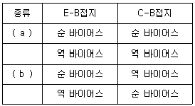
- a : 불포화영역, b : 차단영역
- a : 포화영역, b : 불활성영역
- a : 차단영역, b : 불활성영역
- a : 포화영역, b : 활성영역
(정답률: 83%)
2과목: 전자회로
21. 무부하 출력전압이 24[V]인 전원장치에 부하연결시 출력전압이 22[V]이면 접압 변동률은 약 몇 [%] 인가?
- 5[%]
- 7[%]
- 9[%]
- 10[%]
(정답률: 72%)
22. 다음 중 컬렉터 접지 증폭기에 대한 설명으로 적합하지 않은 것은?
- 이미터 폴로워라고도 한다.
- 전압 이득을 크게 얻을 수 있다.
- 입ㆍ출력 전압 위상은 동위상이다.
- 출력임피던스는 이미터 접지 증폭기보다 낮다.
(정답률: 44%)
23. 다음 중 피어스 수정 발진회로의 발진주파수 변동 요인으로 가장 적합하지 않은 것은?
- 부하의 변동
- 주위 온도의 변화
- 전원전압의 변동
- 발진회로의 차폐
(정답률: 66%)
24. 다음 회로에서 제너 다이오드에 흐르는 전류는 몇 [A]인가? (단, 제너 다이오드의 제너항복전압(Vz)은 10[V]이다.)
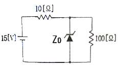
- 0.3[A]
- 0.4[V]
- 0.5[V]
- 0.6[V]
(정답률: 58%)
25. 다음 중 트랜지스터 증폭기 설계 시 동작점(Q점) 결정에 가장 영향이 적은 것은?
- 왜곡
- 최대정격
- 주파수 특성
- 입력신호의 크기
(정답률: 61%)
26. 어떤 증폭기의 전압 증폭도가 100 이고 전류 증폭도가 10일 때 전력이득은 몇 [dB] 인가?
- 20[dB]
- 30[dB]
- 40[dB]
- 60[dB]
(정답률: 42%)
27. 다음 그림의 회로 명칭으로 가장 적합한 것은? (단, R1 = R2 = R3 = R4 이다.)
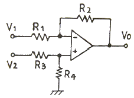
- 이상기
- 대수증폭기
- 차동증폭기
- 부호변환기
(정답률: 85%)
28. 이미터 접지 트랜지스터 증폭회로에서 입력신호와 출력신호간의 위상차는 얼마인가?
- 0°
- 90°
- 180°
- 360°
(정답률: 73%)
29. 다음 중 구형파를 발생시키는 회로로 적합하지 않은 것은?
- 슈미트 트리거 회로
- 클램핑 회로
- 타이머 555 회로
- 비안정 멀티바이브레이터
(정답률: 66%)
30. 차동증폭기에서 공통성분 제거비(CMRR)에 대한 설명 중 옳은 것은?
- 동상이득이 클수록 CMRR이 커진다.
- 차동이득이 클수록 CMRR이 커진다.
- CMRR은
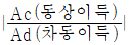
으로 정의된다. - CMRR이 클수록 차동증폭기의 성능이 좋다.
(정답률: 60%)
31. 다음 증폭기 회로에서 이미터 저항 RE를 사용하는 이유로 가장 적절한 것은?
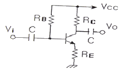
- 회로의 안정화
- 전압 증폭도의 증가
- 주파수 대역폭의 감소
- 전류 증폭도의 증가
(정답률: 69%)
32. 전압이득의 1000, 왜율이 10[%]인 무궤환 증폭기에 궤환율 β = 0.01의 부궤한을 걸었을 때 왜율은 약 몇 [%] 인가?(오류 신고가 접수된 문제입니다. 반드시 정답과 해설을 확인하시기 바랍니다.)
- 0.1[%]
- 0.91[%]
- 1.0[%]
- 5.12[%]
(정답률: 69%)
33. 진폭변조(DSB) 방식에서 변조도를 80[%]로 하면 피변조파의 전력은 반송파 전력의 몇 배가 되는가?
- 1.1배
- 1.32배
- 1.64배
- 2.16배
(정답률: 50%)
34. 부궤환 증폭기에서 무궤환 시 증폭도를 A, 궤환 시 증폭도를 Af, 궤환율을 β라 할 때, A가 대단히 크다고 하면 Af는 주로 무엇에 의해서 결정되는가?
- A
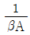
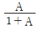
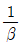
(정답률: 68%)
35. 다음 연산증폭기 회로에서 RL에 흐르는 전류가 2.5[mA] 일때 RL 값은 몇 [kΩ] 인가?
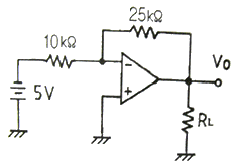
- 4[kΩ]
- 5[kΩ]
- 6.5[kΩ]
- 7.2[kΩ]
(정답률: 71%)
36. RC 결합 저주파 증폭기에서 앞 단에 흐르는 전류 성분 중 다음 단으로 넘어가는 것은?
- 직류분
- 교류분
- 직류뷴 + 교류분
- 직류분 - 교류분
(정답률: 52%)
37. 다음 중 fr(단위 이득 주파수)에 대한 설명으로 가장 적합한 것은?
- 증폭기의 이득이 0[dB]가 되는 주파수
- 증폭기의 이득이 10[dB]가 되는 주파수
- 증폭기의 이득이 최대 이득에서 3[dB]가 떨어지는 주파수
- 증폭기의 이득이 최대 이득에서 6[dB]가 떨어지는 주파수
(정답률: 56%)
38. 트랜지스터 증폭기의 중간영역에서의 전류이득을 0[dB]라고 할 때 α 차단주파수에서의 전류이득은 몇 [dB] 인가?
- 0[dB]
- -1[dB]
- -3[dB]
- -6[dB]
(정답률: 71%)
39. 다음 중 직렬 전압 부궤한 회로의 특징으로 적합하지 않은 것은?
- 전압 이득의 감소
- 주파수 대역폭의 증가
- 비직선 일그러짐의 감소
- 입력 및 출력 임피던스의 증가
(정답률: 49%)
40. 다음 중 연산증폭기의 응용 회로에 속하지 않는 것은?
- 위상기
- 가산기
- 계수기
- 적분기
(정답률: 46%)
3과목: 논리회로
41. 2진수 1011.11을 10진수로 표시하면?
- 101.6
- 15.75
- 11.75
- 10.6
(정답률: 90%)
42. 4단 하향 Counter에서 10번째 클럭펄스가 인가되면 각단이 나타내는 2진수를 10진수로 변환하면?
- 6
- 7
- 8
- 9
(정답률: 78%)
43. 송신기가 ASCⅡ 코드 1100101을 홀수 패리티를 사용하여 전송한다면 11001011을 보내게 된다. 이 때, 수신측에서의 논리적인 검사방식에 주로 사용되는 논리회로는?
- AND
- NOT
- OR
- EX-OR
(정답률: 78%)
44. 메모리에 새로운 워드를 저장시키려 한다. 올바른 순서는?
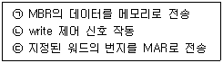
- ㉠ - ㉡ - ㉢
- ㉢ - ㉡ - ㉠
- ㉠ - ㉢ - ㉡
- ㉢ - ㉠ - ㉡
(정답률: 68%)
45. (4)10을 그레이 코드(Gray code)로 변환하면?
- 0100(G)
- 1100(G)
- 0110(G)
- 0010(G)
(정답률: 55%)
46. 다음 중 10개의 플립플롭을 사용하여 만들 수 있는 카운터의 모듈러스 값과 최대 카운터 값으로 올바른 것은?
- 10, 9
- 100, 99
- 1024, 1023
- 1000, 999
(정답률: 76%)
47. 다음 코드(code) 변환 회로의 명칭은?
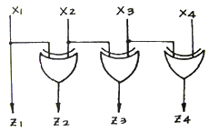
- BCD-9의 보수 변환기
- BCD-3초과 코드 변환기
- BCD-2421 코드 변환기
- BCD-GRAY 코드 변환기
(정답률: 79%)
48. Toggling 상태를 이용한 플립플롭 형태는?
- RS 플립플롭
- D 플립플롭
- JK 플립플롭
- T 플립플롭
(정답률: 73%)
49. 다음 논리식을 카르노 맵으로 올바르게 나타낸 것은?
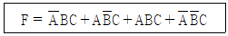
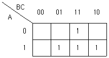
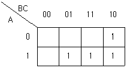
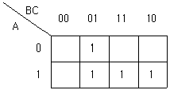
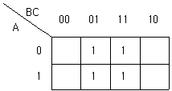
(정답률: 83%)
50. 마스터슬레이브 JK 플립플롭을 사용하는 이유는?
- 지연시간을 짧게 하기 위해
- 지연시간을 길게 하기 위해
- 클럭펄스를 사용할 수 없을 때
- 레이싱(racing) 현상을 없애기 위해
(정답률: 78%)
51. 자기 보수성을 갖고 있는 코드 방식이 아닌 것은?
- 3-초과코드 방식
- BCD코드 방식
- 8421코드 방식
- 2421코드 방식
(정답률: 76%)
52. 다음 논리회로의 기능을 나타낸 이름 중 옳은 것은?
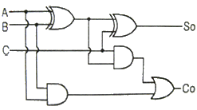
- 인코더(encoder)
- 디코더(decoder)
- 반가산기(half-adder)
- 전가산기(full-adder)
(정답률: 84%)
53. 다음 진리표를 보고 논리식을 바르게 구한 식은?
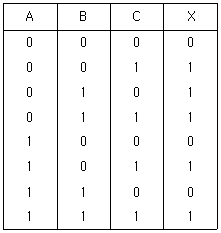
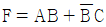
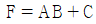
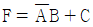
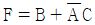
(정답률: 84%)
54. 그림과 같은 회로도의 출력 F는?
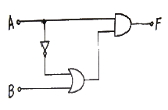
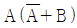
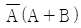
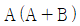
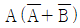
(정답률: 85%)
55. 동기식 카운터와 비동기식 카운터를 비교 설명한 것 중 맞는 것은?
- 동기식 카운터는 각 플립플롭의 colck에 동기되는 카운터이다.
- 동기식 카운터는 비동기식 카운터에 비해서 안정되지 못하는 결점이 있다.
- 동기식과 비동기식 카운터는 플립플롭에 공통으로 클럭(clock)이 공급된다.
- 동기식 up-counter는 기억소자로 응용될 수 있다.
(정답률: 65%)
56. 다음 그림의 파형이 Positive 에지 트리거 D플립플롭의 입력으로 들어간다. 플립플롭에서 클럭펄스(CLK) 후 출력(Q)의 값은?
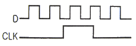
- 불변
- 반전
- 1
- 0
(정답률: 55%)
57. 논리 게이트의 특성을 결정하는 각 요인들에 대한 설명으로 옳지 않은 것은?
- 논리 게이트의 입력 파형과 출력 파형 사이에 발생하는 시간 지연을 지연 시간이라 한다.
- 논리 게이트의 입ㆍ출력 특성 곡선에서 입력전압에 대한 출력 전압의 High level과 Low level 사이의 전압차를 논리 스윙이라 한다.
- 논리 회로가 취급할 수 있는 입력 단자의 수를 팬 인(fan-in)이라 한다.
- 논리 회로가 취급할 수 있는 입력 단자의 수를 팬 아웃(fan-out)이라 한다.
(정답률: 69%)
58. 2진 데이터를 펀치한 카드 덱크기 있다고 한다. 각 카드에는 24개의 36비트 어(WORD)가 들어있다. 만약 카드가 분당 600장의 속도로 읽힌다면 데이터가 계산기에 들어가는 속도는 초당 몇 비트인가?
- 5184000
- 17280
- 8684
- 4320
(정답률: 72%)
59. 다음 그림의 캐스케이드 계수기의 구성에서 총 모듈을 구하면?
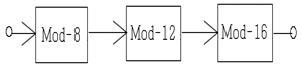
- 36
- 72
- 144
- 1536
(정답률: 65%)
60. 다음 논리회로의 이름은?(정확한 내용을 아시는 분께서는 오류 신고를 통하여 내용작성 부탁드립니다. 정답은 4번입니다.)
- 디코더
- 인코더
- 디멀티플렉서
- 멀티플렉서
(정답률: 76%)
4과목: 집적회로 설계이론
61. 게이트 전압(VG)이 기판 전압(VB)보다 낮은 전위를 갖는 경우, MOS 구조의 동작 모드는?
- 반전 모드(Inversion Mode)
- 공핍 모드(Depletion Mode)
- 증가 모드(Enhancement Mode)
- 축적 모드(Accumulation Mode)
(정답률: 63%)
62. 실제의 IC 소자들이 가지고 있는 지연 시간을 고려한 시뮬레이션 방법으로 특히, 여러 단이 종속적(cascade)으로 연결되었을 경우 최종 출력에서 발생하는 spike나 glitch 등을 방지하기 위한 방법은?
- 타이밍 시뮬레이션(Timing Simulation)
- 구조적 시뮬레이션(Structural Simulation)
- 계층적 시뮬레이션(Hierarchical Simulation)
- 기능성 시뮬레이션(Functionality Simulation)
(정답률: 67%)
63. 다음 CMOS 공정 중에서 가장 먼저 하는 공정은?
- n-well 형성
- active 영역 정의
- metal 증착 및 배선
- 소스, 드레인 확산 형성
(정답률: 72%)
64. 다음 중 레이아웃 할 때 배선에 대한 설명으로 옳지 않은 것은?
- 블록의 배치가 끝나면 블록 사이의 신호선의 연결, 즉 배선을 한다.
- 전원과 접지선, 클럭 등 중요 신호선은 여타 신호선의 배선 후 마지막에 한다.
- 전원과 접지선을 배선할 때에는 가능한 충분한 폭을 확보하는 것이 중요하다.
- 타이밍 상 중요한 신호는 먼저 연결하여 짧은 배선이 가능하도록 한다.
(정답률: 79%)
65. MOS 논리회로의 특성 중 옳지 않은 것은?
- 조합논리회로는 현재의 입력 값에 의해서만 출력이 결정된다.
- 순차논리회로는 현재의 입력과 과거의 입력으로 출력이 결정된다.
- 순차논리회로는 래치(latch)나 플립플롭의 기억소자를 포함한다.
- MOS 논리회로에서 용량성 노드는 고려할 필요가 없다.
(정답률: 77%)
66. N채널 증가형 MOSFET에서 드레인 전류를 흐르게 하려면 게이트 전압을 어떻게 해야 하는가?
- 0 의 전위를 인가해야 한다.
- 양(+)의 전압을 인가해야 한다.
- 음(-)의 전압을 인가해야 한다.
- 양(+), 음(-)의 전압에 관계없다.
(정답률: 65%)
67. VLSI 설계에서 강조되는 구조적 설계 원칙이 아닌 것은?
- 정규성(Regularity)
- 논리성(Logicality)
- 모듈성(Modularity)
- 국지성(Locality)
(정답률: 68%)
68. CMOS 제조 과정에서는 nMOS와 pMOS 트랜지스터를 만들 때 생기는 n 층과 p 층간의 결합(n-p-n-p 또는 p-n-p-n)에 의해 기생 트랜지스터가 구성되는데, 이 기생 트랜지스터가 결합되어 Vdd와 Vss 사이에 전류 통로가 형성되는 현상을 무엇이라 하는가?
- 단락(Short)
- 래치업(Latch-up)
- 상호연결 기생요소
- ESD(Electrostatic Discharge)
(정답률: 87%)
69. 다음 중 Integrated Circuit(IC)에 포함시키기가어려운 소자는?
- 트랜지스터(Transistor)
- 다이오드(Diode)
- 코일(Coil)
- 저항(Resistor)
(정답률: 79%)
70. 결정 내의 스트레인과 결함을 줄이고, 단결정의 성장을 촉진시키기 위해 웨이퍼를 일정시간 온도가 높은 곳에서 의도적으로 넣어두는 것을 무엇이라 하는가?
- 도핑(doping)
- 어닐링(annealing)
- 코팅(coating)
- 테이퍼링(tapering)
(정답률: 81%)
71. 다음 중 CMOS NAND 게이트의 구조에 대한 설명으로 옳은 것은?
- PMOS 쪽은 병렬, NMOS 쪽은 직렬로 트랜지스터들이 연결되어 있다.
- PMOS 쪽은 병렬, NMOS 쪽도 병렬로 트랜지스터들이 연결되어 있다.
- PMOS 쪽은 직렬, NMOS 쪽도 직렬로 트랜지스터들이 연결되어 있다.
- PMOS 쪽은 직렬, NMOS 쪽도 병렬로 트랜지스터들이 연결되어 있다.
(정답률: 61%)
72. 2개 변수와 그 기능이 바르게 연결되지 않은 것은?
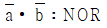
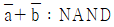
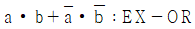
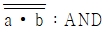
(정답률: 77%)
73. 다음 모노리틱(Monolithic) IC의 제조과정 중 제일 마지막에 수행하는 공정은?
- 에피택셜(Epitaxial) 성장
- 산화막(Oxide) 생성
- 알루미늄 증착
- 불순물 확산
(정답률: 83%)
74. 다음 중 VLSI 제작 과정이 옳은 것은?
- 설계 규격 (→) 논리회로 설계 (→) 아키텍처 설계 (→) 레이아웃 설계 (→) 마스크 제작 (→) 칩 제작
- 설계 규격 (→) 레이아웃 설계 (→) 논리회로 설계 (→) 아키텍처 설계 (→) 마스크 제작 (→) 칩 제작
- 설계 규격 (→) 아키덱처 설계 (→) 레이아웃 설계 (→) 논리회로 설계 (→) 마스크 제작 (→) 칩 제작
- 설계 규격 (→) 아키덱처 설계 (→) 논리회로 설계 (→) 레이아웃 설계 (→) 마스크 제작 (→) 칩 제작
(정답률: 62%)
75. 베이스 폭이 3×10-3[cm] 일 때 펀치-슬로 전압Vpt가 7[V]인 PNP 트랜지스터에서 베이스 폭이 6×10-3[cm]으로 증가하면 Vpt는 얼마인가?
- 25[V]
- 26[V]
- 27[V]
- 28[V]
(정답률: 49%)
76. 다음 사진 식각 공정을 이용한 산화막 식각 공정을 올바른 순서를 나열한 것은?
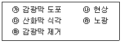
- ㉮(→) ㉯(→) ㉰(→) ㉱(→) ㉲
- ㉮(→) ㉰(→) ㉯(→) ㉱(→) ㉲
- ㉮(→) ㉱(→) ㉯(→) ㉰(→) ㉲
- ㉮(→) ㉱(→) ㉰(→) ㉯(→) ㉲
(정답률: 70%)
77. 집적회로 구현을 위한 웨이퍼 제조 공정에 해당하지 않은 것은?
- 현상 공정
- 확산 공정
- 박막 공정
- 칩 테스팅 공정
(정답률: 82%)
78. MOS 구조의 전계효과 중 게이트 전압 VG가 크게 증가하면 전계의 증가에 의해 산화층과 실리콘의 경계 면에 소수 캐리어인 전자가 모이는 현상은?
- 공핍 모드(Depletion mode)
- 반전 모드(Inversion mode)
- 축적 모드(Accumulation mode)
- 바디 바이어스 효과(Body bias effect)
(정답률: 63%)
79. CMOS domino 로직회로를 사용할 때의 특성에 해당되지 않는 것은?
- 팬 아웃(fan-out)은 항상 1 이다.
- EX-OR 와 같은 회로 구성으로 적합하다.
- 인버터를 사용하므로 구동 능력이 늘어난다.
- 같은 형태의 논리회로를 연속으로 연결할 수 있다.
(정답률: 63%)
80. CMOS 디저털 집적회로의 동적 전력소모에 대한 설명 중 옳지 않은 것은?
- 전원 전압이 클수록 증가한다.
- 동작 주파수가 클수록 감소한다.
- 캐패시턴스 성분이 클수록 증가한다.
- 전력소모가 크면 동작온도가 증가한다.
(정답률: 45%)